Earlier in this chapter you met
the relational operators,
which work with numeric or object operands and produce
boolean values.
In this section, you'll meet another group of operators
that can be used to produce boolean values,
known as to logical or Boolean operators.
 Unlike the relational operators, the logical
operators that you'll meet here only
work with
Unlike the relational operators, the logical
operators that you'll meet here only
work with boolean operands, not numbers or
objects. The logical operators can be used to combine
several Boolean expressions into a single true
or false value which can be used as the
test condition in an if statement.
Java has six logical operators. These operators
require boolean operands, just like the arithmetic
operators require numeric values as operands.
The six logical operators include:
- One unary logical operator: NOT (
!) - Two versions of the binary AND operator
(
&&,&) - Two versions of the binary inclusive OR operator
(
||,|) - One exclusive OR operator (
^)
Let's start by looking a NOT.
The NOT Operator
The unary NOT operator—which uses the exclamation point as
its symbol, and not the word NOT—appears to
the left of (in front of) the value it operates on. The effect
of NOT is to reverse the sense of a boolean
expression.
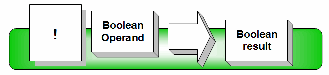
For instance, here are three different expressions: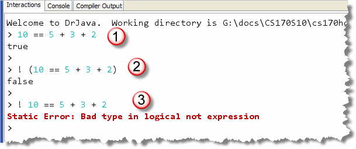
Notice that:- The first expression:
10 == 5 + 3 + 2is true because 10 is equivalent to 5 + 3 + 2. - To reverse the value of the expression by using
the NOT operator you put the expression in parentheses
and place the
!symbol in front. As you can see, that makes the expressionfalse. - The parentheses are required.
If you leave them off, then the expression will
not compile, because NOT, being a unary
operator, has higher precedence than the
arithmetic addition operator (
+), or than the relational equality operator (==).
By omitting the
parentheses in example 3, the expression attempts to
apply the NOT operator to the number 10; but 10 is a numeric value,
not a boolean value. NOT only operates on
boolean values.
NOT and Methods
I find myself using the NOT operator most often to
reverse the sense of a predicate function. For instance,
the String class has and equals()
method, but it doesn't have a notEquals()
method. Instead, you'll use the NOT operator like this:
if (! s.equals(answer)) ... // s != answer
Using NOT as a Toggle
One useful technique you should know is how to toggle
a value between different states: from true to
false and then back to true. Programs
that use this technique are examples of very simple
state machines.
Here's an example that you can follow along with
in CountWords.java, (which you'll find in this chapter's
code folder). Suppose we want to count the words
in a String, using a loop and checking each
character. In the last chapter you learned to do that by writing
"boilerplate" code that extracts each character in
a String like this:
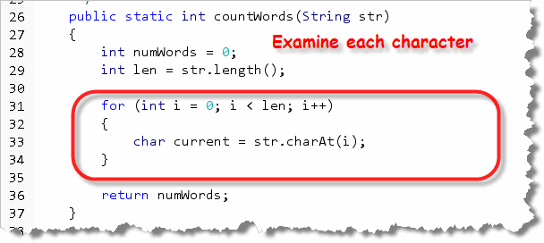
Now, to actually count the number of words, we need to check the transition from being "inside" of a word and being "outside" of a word. We can do that by adding a Boolean flag or state variable to keep track of "where we are", like this: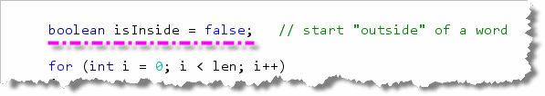
When we first start, since we haven't processed any characters, we setisInside to false.
When we move from being outside to inside, we add one to
our counter. However, we also need to set our flag to its
opposite state. You can do that with the toggle
statement like this:
isInside = !IsInside;
As the program runs, isInside will switch to
true when we enter a word and back to false
when we exit. This is why it is called a toggle, because
it acts like the toggle switch that turns your computer
on and off; you don't have separate on and off switches, do you?
I'll continue with the word counting example in a minute, but to finish it we'll need to know how to combine several Boolean conditions. For that, you'll need to use the rest of the logical operators.
The AND Operators
The four binary logical operators each require
two boolean values, one on each side of the
operator as shown here:
 The AND symbol used by Java is the
ampersand (
The AND symbol used by Java is the
ampersand (&) or, more commonly, the
double-ampersand (&&).
When using the
double-ampersand (&&), make sure you don't
put a space or line-break between the symbols—they must
appear adjacent to one another.
The AND operator corresponds to our normal, logical understanding of the word and. If a teacher says that you must score at least 85% on the average of three exams AND complete at least 90% of the homework to get an 'A', you understand that you must complete both prerequisites before you'll get an 'A'. Given this scenario, completing 80% of the homework, and getting 100% on the exams would not earn you an 'A'.
An Example
When used in programs, the logical AND is used to make sure that more than one condition is true before executing a piece of code.
Here's a simplistic discounting strategy, for instance, that attempts to provide a bigger discount for products which have sold fewer items, but limits the discounting strategy to low-ticket products:
if (numSold > 0 && price < 1500)
{
discount = price / 2 / numSold;
}
else
{
discount = 0.0;
}
Because both sides of the expression must be true before the code will be executed, you won't inadvertently apply the discount to a new Lexus. You'll also avoid a division-by-zero error that would occur if you didn't check first to make sure that the number sold was greater than zero.
Counting Words Again
Let's look at our word counting example again. Let's assume that each word is separated by the others using whitespace characters which include the regular space, the tab character and the newline among others.
The isWhitespace()
predicate method in the Character "wrapper" class
will tell you if a character is a whitespace character. You
can use it like this to test when you move from being
outside of a word to being inside a word:
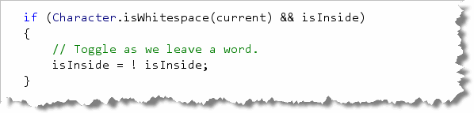
Notice how we must use the AND operator here: you move from being inside of a word to being outside of a word only when both conditions are true:- the current character read is a whitespace character, and...
isInsideistrue, indicating that the last character read was not a whitespace character.
Note also that we don't update the number of words when this occurs; we count the word when we enter it, not when we leave it.
So, what does the code look like to check for an entry to a
word? It's almost the same, except we need to use the NOT
operator (twice!) along with AND like this:
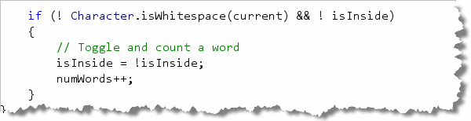
Besides the use of the NOT operator, the only difference is that in this block of code we update the word counter as well.Try It Yourself
Go ahead and try it out. Complete CountWords.java
using the code shown up to now.
Run the program and make sure that the first paragraph
of Moby Dick really has 198 words.
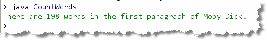
The OR Operators
Like the logical AND operators, the logical OR
operators both require two operands, one on the left and one
on the right of the operator. Java uses the vertical bar symbol
(|), and double vertical bar symbols
(||) for its OR operators. As with the
AND symbol (&&), make sure you
don't put a space between the two vertical bars.
The OR operator, like AND, also corresponds to our natural way of speaking. If a teacher promises you ten points for going to the museum or for watching a documentary on PBS, you expect your ten points if you do either one, or if you do both. You won't get any points, however, if you do neither.
An Example
When writing code, the OR operator is used to make sure that at least one necessary condition is true. Here's an example that gives a discount to both senior citizens and children:
double discount = 0.0;
if (age <= 12 || age >= 65)
{
discount = .25;
}
The XOR Operator
Java has one additional version of the OR operator
that isn't used as often as the others. The "exclusive OR" operator,
(commonly known as the XOR operator) used the
"caret" (^) as its symbol.
XOR is a binary operator, like the other versions
of OR. Unlike the inclusive OR however,
an XOR expression is true when exactly one of its
operands is true and exactly one of its
operands is false.
Here's an example, from James Gosling's book, The Java Programming Language, that uses the XOR operator to determine if two numbers have the same or different signs:
if ((x < 0) ^ (y < 0))
processDifferentSign();
else
processSameSign();
Although you should recognize the XOR operator
when you see it, it's not actually used that often in
code. In fact, all three single-symbol logical
operators (|, &,
^) are used infrequently. What is
often confusing for beginning programmers is that
the same three symbols can be used to manipulate and
test the bits of integer values, for a similar,
but really different purpose.
AND and OR Pitfalls
As you begin to write code that uses AND and OR, you're almost certain to occasionally confuse the two. When you do, you'll find yourself writing two kinds of erroneous condition statements: the impossible condition and the unavoidable condition.
Let's take a look at both.
The Impossible Condition
An impossible condition occurs when no conceivable combination of values could ever make the condition true. Let's take our senior-citizen/children's discount example. If you are writing the code, you might receive the problem statement phrased like this:
Give a 25% discount to children who are 12 and under and to patrons who are 65 or older.
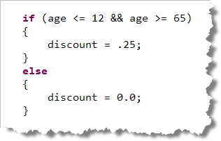
If you're in a hurry, you may notice the AND in the problem statement, and write your code like this. This is an impossible condition because for every
possible value that the variable age could take on, the
expression still evaluates to false. If the value in
the variable age is less than 12, then, by
definition, it cannot be greater than 65. If age
contains a value greater than 65, then by definition,
it cannot be less than 12.
Because AND requires that both sides be true before the entire expression is true, this condition can never be true. It is impossible.
The Unavoidable Condition
The impossible condition occurs when you use AND when you should use OR. The unavoidable condition occurs in the opposite case. An unavoidable condition occurs when no conceivable combination of values used as operands could ever make the condition false.
Here's our same discount example. This time an attempt is made to calculate the ticket price, rather than just a discount. The problem statement is phrased this way:
If the patron's age is greater than 12 or less than 65 we'll charge them 8.75 for their ticket. All others will pay the discounted price of 5.75.
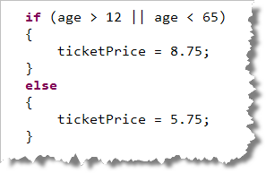
If you simply blindly translate this problem into Java code, without thinking, you end up with the code shown here. As you can see, for every value of age, the entire
expression is true. If age is less than 12,
it fails the first test, but passes the second. If age is
greater than 65, it passes the first test, while failing the
second. If age falls between 12 and 65 it passes
both tests.
For every possible value of age, the expression
is true. Everyone pays full price because the condition
is unavoidable.
The Solution
The solution to both of these problems is to double-check each
time you use AND and OR, to make sure you are
using the correct one. Our first example can be fixed by using
OR instead of AND, like this:
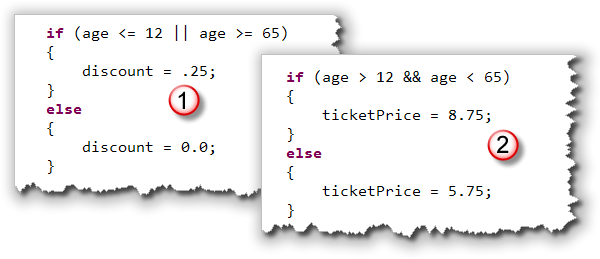
In the same way, the unavoidable condition can be fixed by replacing OR with AND.Short-circuit Evaluation
 If you've ever watched the television
game show "Wheel of Fortune", you know that there comes
a time when the answer to the puzzle is obvious, even if all
of the letters haven't been exposed, like the example
shown here. I can hear you shouting out the answer at
your TV right now.
If you've ever watched the television
game show "Wheel of Fortune", you know that there comes
a time when the answer to the puzzle is obvious, even if all
of the letters haven't been exposed, like the example
shown here. I can hear you shouting out the answer at
your TV right now.
The same thing is true with Java's logical operators; at some point, Java "knows" what the result will be, even if it hasn't evaluated the entire expression.
Let's look at a couple of examples:
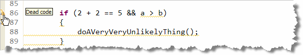
Since you know that the expression2 + 2 == 5 is
false, it really doesn't matter if a is larger
than b or not. You know that the whole
expression is false, regardless of the values stored in
a and b.
The screenshot shown here was taken using the professional
Eclipse IDE, which marks both the expression and the
body of the if statement as dead code,
since the expression is always false.
Here's another example:
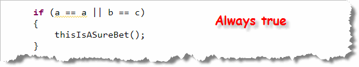
Again, no matter what values are stored in b or c, you know that the whole expression is true, because a == a by definition, istrue. You don't
have to even glance twice at c and d; they're
irrelevant.
That is how Java's && and ||
operators (formally known as the conditional operators)
work:
- The
&&and||operators evaluate their expressions from left to right and stop evaluation when the result is assured. - For
&&, the evaluation stops when a false value is encountered. - For
||, the evaluation stops when a true value is encountered.
The &, | and ^ operators, in
contrast, evaluate both sides of an expression, even if the
result is a forgone conclusion.
The "Bitwise" Logical Operators
If you are a C or C++ programmer, you are
probably used to thinking of the &,
|, and ^ operators as the "bitwise"
AND, OR and XOR operators. In Java,
however, these operators live a double life. When applied to
numeric values, they act like the bitwise logical operators
used in C; when applied to boolean operands,
they act as described here.
Here are some examples using the different operators, along with a little commentary:
Example 1
Here's an example that checks to make sure a is not equal to zero and that b divided by a is greater than twelve.
if ( (a != 0) && (b / a > 12))
{
performExcellently();
}
Because the short-circuit form of AND (&&) is employed, if a is equal to zero, the second test will never be attempted, guaranteeing that there will be no unsightly divide-by-zero error.
Example 2
This is similar to the previous example, except the "long-circuit" version of AND is used. What result would you expect?
if ( (a != 0) & (b / a > 12))
{
performPoorly();
}
While using & instead of &&
doesn't change the ultimate result of the expression, this
example nevertheless is in error. If a is ever zero,
then a divide-by-zero runtime error is guaranteed,
because both sides of the
AND expression will be evaluated.
A bug like this is hard to find in testing, because you must make sure to test it when a is zero. This test is often skipped.
Example 3
The OR operator is also susceptible to certain pitfalls, along with the AND operator. Because of short-circuit evaluation, the right-hand side of the following expression is not evaluated when a is greater than ten. That means that the variable b will only be incremented when a is less than, or equal to ten.
if ( (a > 10) || (b++ > 7))
{
aPotentialProblem();
}
Unlike the previous example, this is not always a bug. Nonetheless it is very poor style because those reading it will have a hard time accounting for the side effect that occurs when the variable b is incremented.
Example 4
This shows a more understandable way to code the previous example. Here, the variable b is incremented every time the expression is evaluated, and it is much easier to follow the execution of the code when you are debugging.
if ( (a > 10) | (b++ > 7))
{
allsOK();
}
Precedence
When studying the primitive types, you learned about precedence and its effect on the evaluation of numeric expressions. Precedence has an effect on the use of relational and logical operators, as well. Here the precedence chart you saw previously saw, with the operators we're looking at now highlighted:
| Precedence Groups | Operators |
|---|---|
| postfix operators | [] . (params) expr++ expr-- |
| unary operators | ++expr --expr +expr -expr ~ ! |
| creation or cast | new (type)expr |
| multiplicative | * / % |
| additive | + - |
| shift | << >> >>> |
| relational | < > <= >= instanceof |
| equality | == != |
| bitwise AND | & |
| bitwise exclusive OR | ^ |
| bitwise inclusive OR | | |
| logical AND | && |
| logical OR | || |
| conditional | ? : |
| assignment | = += -= *= /= %= &= ^= |= <<= >>= >>>= |
Here are the important things you should notice:
- First, note that the relational operators all appear below the
arithmetic operators, so you can write
a > 3 + 5
rather than having to writea > (3 + 5)
- Second, note that the logical operators all appear below the
relational operators, so you can write
a > 3 || b < 5
rather than having to write(a > 3) || (b < 5)
- Finally, note that AND (
&&) has higher precedence than OR (||). This means that the expression:10 < 15 || 5 > 8 && 3 > 5
is evaluated as10 < 15 || ( 5 > 8 && 3 > 5)
which is true, instead of as(10 < 15 || 5 > 8) && 3 > 5
which is false.

Logical Operators Summary
- The logical operators work with
booleanoperands and produce abooleanresult. - The unary NOT operator (
!) reverses the sense of a Boolean expression, togglingtruetofalse, and vice-versa. - The binary logical operators are used to combine several Boolean expressions into one single Boolean expression.
- The binary AND operators (
&&and&) returntrueif both operands aretrue, andfalseif any operand isfalse. - The binary OR operators (
||and|) returntrueif any operand istrue, andfalseonly when all operands arefalse. - The (infrequently used) XOR operator returns
trueif exactly one of its operands istrue, andfalsefor all other combinations. - The impossible condition occurs when you mistakenly use the AND operator when you should use OR. This produces a combined condition that can never be satisfied.
- The unavoidable condition occurs when you mistakenly use the OR operator when you should use AND. This produces a condition that will always be satisfied.
- When using the
&&version of AND, or the||version of OR, Java will stop evaluating the expression when the result is assured. This is called short-circuit or lazy evaluation. The single-symbol versions of these operators will always evaluate both sides of the expression. - The logical operators have lower precedence than the relational operators, so you don't have to use parentheses when combining two relational expressions. The logical AND has higher precedence than the logical OR.